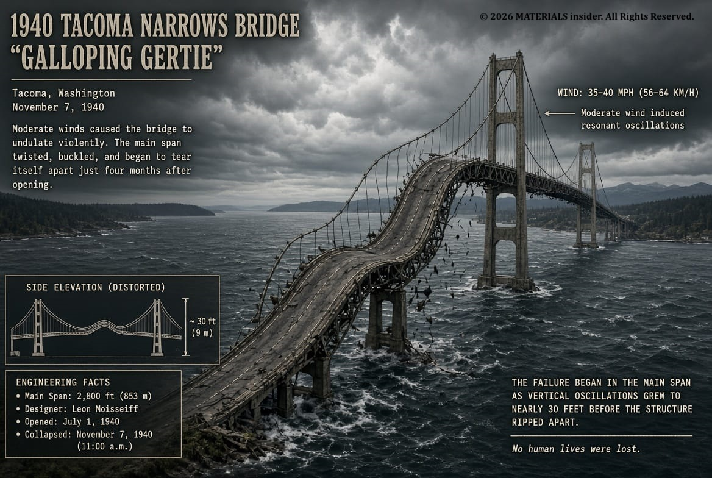
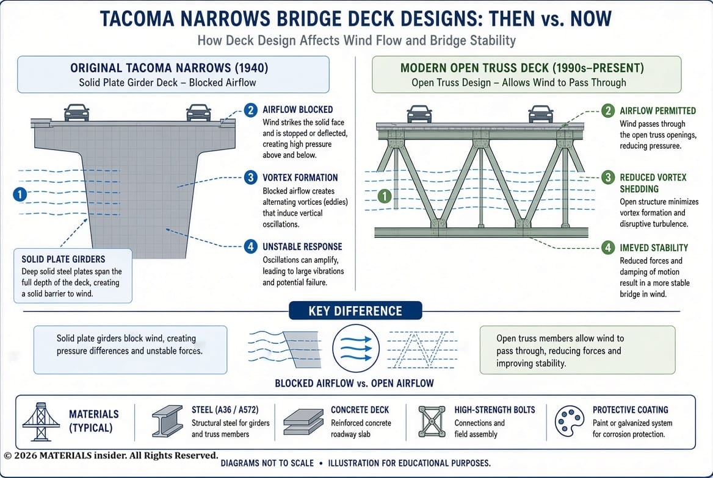
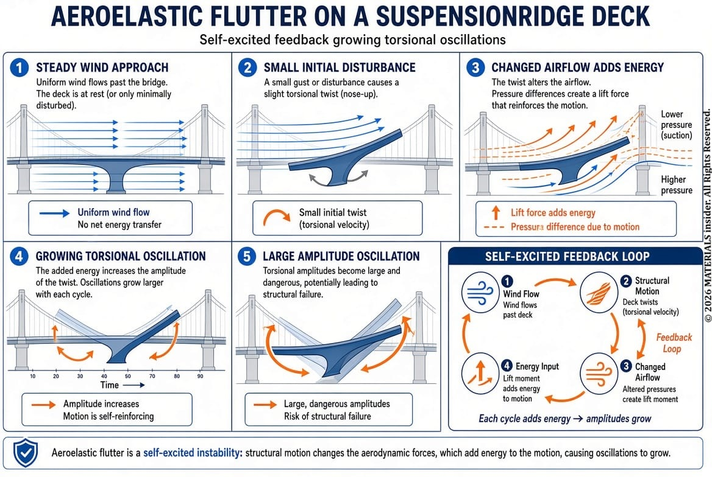
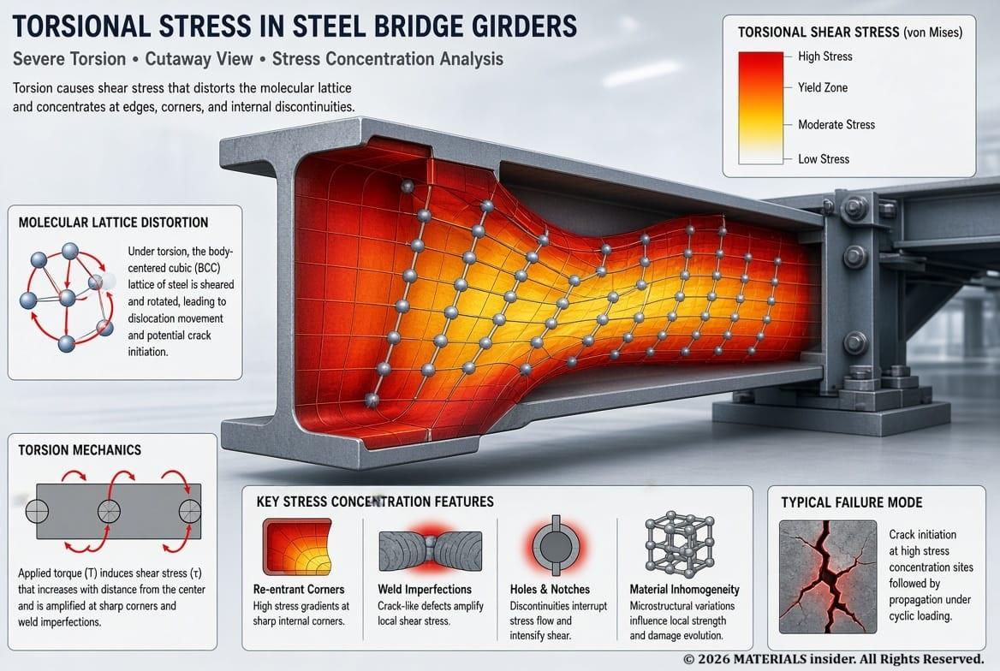
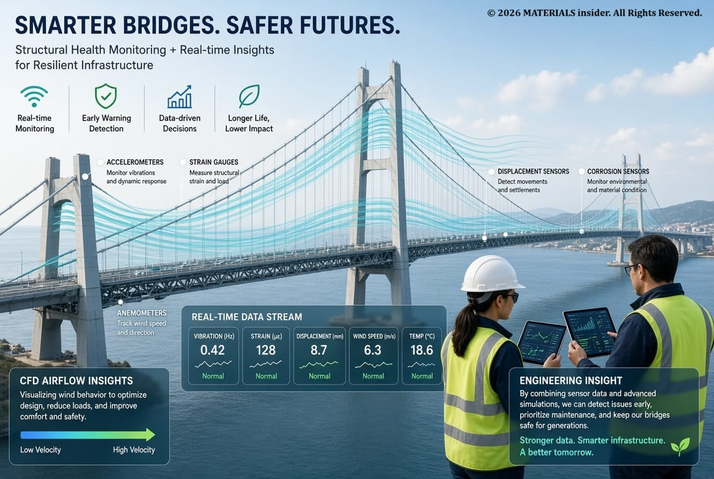

Tacoma Narrows Bridge Collapse (1940)
The Tacoma Narrows Bridge Collapse of 1940 remains one of the most important engineering failures in history and a classic materials science case study. This dramatic event, caused by aeroelastic flutter rather than simple resonance, revealed critical lessons in structural dynamics, wind engineering, and failure analysis that still shape modern bridge design and materials engineering education today.
The collapse of the original Tacoma Narrows Bridge is more than a dramatic historical event. It is a classic case study in materials science, structural dynamics, aeroelasticity, and failure analysis. Universities still teach it because it delivers a hard truth about the structures can be strong enough to carry its design loads but still fail catastrophically when dynamic forces are ignored.
When a Bridge Started to “Dance” !
On November 7, 1940, just four months after opening, the Tacoma Narrows Bridge in Washington State tore itself apart in winds of roughly 40–42 mph (64–68 km/h). Nicknamed “Galloping Gertie”, the slender suspension bridge had already shown noticeable vertical motion in moderate winds. That morning the motion shifted into violent torsional (twisting) oscillations. The deck twisted with increasing amplitude until concrete and steel gave way and the main span plunged into Puget Sound.
There was:
- No earthquake
- No hurricane-force wind
- No material defect in the steel
- No overload from traffic
The bridge failed because of an interaction between wind and structural motion that engineers now recognize as aeroelastic flutter.

Why This Case Still Matters
Modern engineers rely on digital twins, computational fluid dynamics (CFD), finite-element analysis (FEA), structural health monitoring, and AI-assisted design tools. Platforms that help analyze structural behavior are only as reliable as the physical principles behind them. Tacoma remains a reminder that static strength calculations are never enough. Dynamic interactions between materials, geometry, and the environment must be understood and designed for.
The Original Design
At the time it was considered elegant and economical:
- Main span: 2,800 ft (853 m)
- Very slender, narrow roadway (only two lanes, about 39 ft / 12 m wide)
- Solid plate girders only 8 ft (2.4 m) deep instead of deeper open trusses
- Low torsional stiffness
These choices reduced material use and cost but produced a structure with unusually low resistance to twisting. Engineers of the era focused heavily on strength and weight reduction; understanding of long-span aerodynamic behavior was still limited.

Static Loads vs Dynamic Loads!
Static loads remain relatively constant: self-weight of the structure, parked vehicles, equipment. Stress is calculated simply as
σ = F / A
where σ is stress, F is force, and A is cross-sectional area. The Tacoma bridge could handle its expected static loads.
Dynamic loads vary with time: wind, vibration, traffic movement, earthquakes. They can excite oscillations, fatigue, resonance, or aeroelastic instabilities that simple strength checks miss. That was the fatal weakness.
The Biggest Myth: It Was Not Simple Resonance!
Many older textbooks described the collapse as resonance. Modern research shows that explanation is incomplete and largely incorrect.
Resonance requires an external periodic force whose frequency matches a natural frequency of the structure. The winds that day were relatively steady. The dominant mechanism was Torsional Aeroelastic Flutter and it is a self-excited, self-sustaining instability.
Understanding Aeroelastic Flutter!
Flutter is a feedback process:
- Wind flows around the solid plate girders.
- The deck twists slightly.
- The changed angle alters the airflow (lift and moment).
- The new aerodynamic forces add energy to the twisting motion.
- Amplitude grows.
- The structure itself helps generate the forces that destroy it.
Unlike ordinary resonance, flutter does not need periodic gusts at a matching frequency. Once a critical wind speed is exceeded, negative aerodynamic damping can make oscillations grow without bound. Solid plate girders forced air to flow over and under the deck rather than through it, intensifying the interaction. Open-truss designs allow air to pass more freely and reduce this risk.

The Materials Science Perspective!
The carbon-steel members did not suddenly become weak. The failure was systemic:
- Material properties — elastic modulus, density, and low inherent damping
- Geometry — slender deck, low torsional stiffness, narrow cross-section, solid girders
- Environment — steady aerodynamic loading
A material can meet every static strength requirement and still participate in a failed design if dynamic behavior is ignored. Damping capacity and geometric stiffness matter as much as ultimate strength.

How Tacoma Changed Modern Engineering!
The disaster transformed long-span bridge design worldwide. Today engineers routinely perform:
- Wind-tunnel testing of scale models
- Computational fluid dynamics (CFD) to predict lift, drag, vortex shedding, and flutter derivatives
- Finite-element analysis of modal behavior, stress, and vibration
- Structural health monitoring with sensors for acceleration, displacement, and wind
Modern decks are shaped and stiffened specifically for aeroelastic stability. Open trusses or streamlined box girders are preferred over solid plate girders for long spans.
Five Lessons for Materials Engineers!
- Strength alone is not enough. Static calculations can be perfect and the structure can still fail dynamically.
- Geometry matters. Shape controls airflow and structural response.
- Damping is critical. Energy must be dissipated or the system can run away.
- Interdisciplinary thinking wins. Materials science, structural engineering, fluid mechanics, and dynamics must work together.
- Failure is a teacher. Many modern codes and practices exist because of lessons learned from Tacoma and similar events.
The Modern Connection: Engineering in the AI Age!
AI tools can accelerate analysis, generate design options, and process sensor data. They cannot replace understanding of the underlying physics. Whether the tool is a large language model, optimization software, or a generative design system, engineers must still ask the right questions about dynamic loads, aeroelasticity, and material behavior under real environmental conditions.

Final Thoughts!
The Tacoma Narrows Bridge did not collapse because the steel was weak. It collapsed because engineers underestimated how a flexible structure would interact with moving air.
Design for dynamic forces, not just static loads. Every material and every structure exists in a changing environment. Real safety comes from understanding the interactions among materials, geometry, and external forces over time.
That lesson, born from a bridge failure in 1940, remains essential in the age of AI-assisted engineering.
References!
- Billah, K. Y., & Scanlan, R. H. (1991). Resonance, Tacoma Narrows bridge failure, and undergraduate physics textbooks. American Journal of Physics.
- Zhang, B., & Zhu, L. (2025). Experimental and Computational Analysis of Large-Amplitude Flutter in the Tacoma Narrows Bridge. Buildings, 15(15), 2800.
- American Society of Civil Engineers and Washington State Department of Transportation historical resources on the Tacoma Narrows Bridge.
- Technical reviews of aeroelastic flutter and bridge aerodynamics (APS, Journal of Fluid Mechanics, and related literature).

Self-Healing Materials : The Future of Sustainable & Self Sustainable Materials
A cracked smartphone screen that repairs itself overnight, or a bridge that can automatically fix tiny fractures before they become dangerous. This is not science fiction—these are examples of self-healing materials.
Read Full Article →
Rheopectic Fluids: Time-Dependent Thickening Under Stress
These rare materials gradually increase in viscosity (become thicker) the longer they experience sustained shear stress. Unlike instantaneous shear-thickening (dilatant) behavior, rheopecty requires prolonged agitation: the more you stir or shake (within limits), the more resistant to flow the fluid becomes.
Read Full Article →Share this article:
Advertisement 1/4
Advertisement 2/4
Advertisement 3/4
Advertisement 4/4